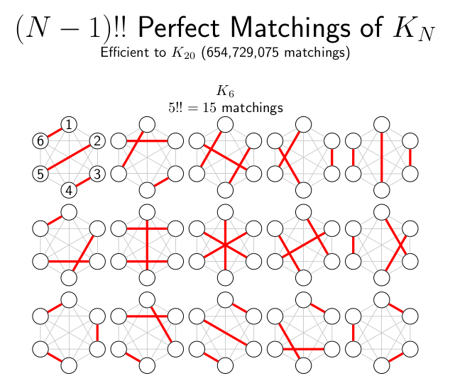

Contents
%-------------------------------------------------------------------------- % PM_verify.m % Finds the perfect matchings matrix and displays some checks on the result % Random perfect matchings for larger complete graphs %-------------------------------------------------------------------------- % Primary Contributor: Daniel R. Herber, Graduate Student, University of % Illinois at Urbana-Champaign % Link: https://github.com/danielrherber/perfect-matchings-of-a-complete-graph %--------------------------------------------------------------------------
Set size of the complete graph Kn
This number needs to be even (and between 2 and 20 unless you have more than 210 Gb of RAM)
N = 14;
Find the perfect matchings matrix
and display first 15 rows
G = PM_perfectMatchings(N); disp('PM_perfectMatchings returns all PMs for a given N') disp('first rows of G:') disp(G(1:min([size(G,1) 15]),:)) disp(' ')
PM_perfectMatchings returns all PMs for a given N first rows of G: 14 1 13 2 12 3 11 4 10 5 9 6 8 7 14 1 13 2 12 3 11 4 10 5 9 7 8 6 14 1 13 2 12 3 11 4 10 5 9 8 7 6 14 1 13 2 12 3 11 4 10 6 9 5 8 7 14 1 13 2 12 3 11 4 10 6 9 7 8 5 14 1 13 2 12 3 11 4 10 6 9 8 7 5 14 1 13 2 12 3 11 4 10 7 9 5 8 6 14 1 13 2 12 3 11 4 10 7 9 6 8 5 14 1 13 2 12 3 11 4 10 7 9 8 6 5 14 1 13 2 12 3 11 4 10 8 9 5 7 6 14 1 13 2 12 3 11 4 10 8 9 6 7 5 14 1 13 2 12 3 11 4 10 8 9 7 6 5 14 1 13 2 12 3 11 4 10 9 8 5 7 6 14 1 13 2 12 3 11 4 10 9 8 6 7 5 14 1 13 2 12 3 11 4 10 9 8 7 6 5
Some checks on the accuracy of the output
these should all be the same
disp('predicted number of perfect matchings (N-1)!!:') disp(int2str(prod(1:2:N-1))) disp('length(G):') disp(int2str(size(G,1))) disp('number of unique rows:') [~,IA,IC] = unique(G,'rows'); % check if all the rows are unique disp(int2str(length(IC))) disp(' ') % these should all be the same disp('predicted row sum:') disp(int2str(sum(1:N))) disp('minimum row sum:') disp(int2str(min(sum(G,2)))) disp('maximum row sum:') disp(int2str(max(sum(G,2)))) disp(' ') % save the perfect matchings matrix (optional) % save(['P',num2str(N),'.mat'],'G','-v7.3')
predicted number of perfect matchings (N-1)!!: 135135 length(G): 135135 number of unique rows: 135135 predicted row sum: 105 minimum row sum: 105 maximum row sum: 105
Demonstrate the equivalence with the PM_index2pm approach
G = PM_index2pm(1:min([size(G,1) 15]),N); disp('first rows of G with PM_index2pm:') disp(G) disp(' ')
first rows of G with PM_index2pm: 14 1 13 2 12 3 11 4 10 5 9 6 8 7 14 1 13 2 12 3 11 4 10 5 9 7 8 6 14 1 13 2 12 3 11 4 10 5 9 8 7 6 14 1 13 2 12 3 11 4 10 6 9 5 8 7 14 1 13 2 12 3 11 4 10 6 9 7 8 5 14 1 13 2 12 3 11 4 10 6 9 8 7 5 14 1 13 2 12 3 11 4 10 7 9 5 8 6 14 1 13 2 12 3 11 4 10 7 9 6 8 5 14 1 13 2 12 3 11 4 10 7 9 8 6 5 14 1 13 2 12 3 11 4 10 8 9 5 7 6 14 1 13 2 12 3 11 4 10 8 9 6 7 5 14 1 13 2 12 3 11 4 10 8 9 7 6 5 14 1 13 2 12 3 11 4 10 9 8 5 7 6 14 1 13 2 12 3 11 4 10 9 8 6 7 5 14 1 13 2 12 3 11 4 10 9 8 7 6 5
Demonstrate PM_pm2index
I = zeros(1,size(G,1)); for i = 1:size(G,1) I(i) = PM_pm2index(G(i,:)); end disp('PM_pm2index returns the # given the PM graph') disp('PM #s for previous graphs:') disp(I) disp(' ')
PM_pm2index returns the # given the PM graph
PM #s for previous graphs:
Columns 1 through 13
1 2 3 4 5 6 7 8 9 10 11 12 13
Columns 14 through 15
14 15
Random perfect matchings for larger complete graphs
20 random matchings with N = 30
Nsingle = 30; Nrand = 20; I = randi([1 prod(1:2:Nsingle-1)],1,Nrand); Grand = PM_index2pm(I,Nsingle); disp('PM_index2pm returns the PM graph given the #') disp(Grand) disp(' ')
PM_index2pm returns the PM graph given the #
Columns 1 through 15
30 15 29 26 28 21 27 22 25 7 24 6 23 20 19
30 26 29 18 28 10 27 21 25 9 24 22 23 1 20
30 18 29 2 28 12 27 17 26 1 25 16 24 7 23
30 5 29 15 28 6 27 9 26 11 25 23 24 2 22
30 6 29 23 28 14 27 9 26 7 25 1 24 13 22
30 12 29 23 28 18 27 4 26 7 25 2 24 10 22
30 22 29 20 28 6 27 25 26 1 24 15 23 16 21
30 24 29 27 28 11 26 20 25 10 23 21 22 18 19
30 23 29 26 28 14 27 13 25 3 24 5 22 21 20
30 10 29 7 28 13 27 3 26 17 25 4 24 20 23
30 16 29 14 28 5 27 9 26 1 25 12 24 18 23
30 3 29 18 28 12 27 22 26 1 25 23 24 15 21
30 4 29 8 28 14 27 18 26 20 25 2 24 17 23
30 4 29 27 28 19 26 24 25 8 23 13 22 18 21
30 20 29 19 28 10 27 16 26 5 25 23 24 7 22
30 15 29 10 28 21 27 3 26 2 25 14 24 8 23
30 6 29 15 28 16 27 17 26 9 25 19 24 14 23
30 15 29 10 28 17 27 20 26 25 24 23 22 1 21
30 5 29 9 28 17 27 12 26 24 25 3 23 19 22
30 2 29 18 28 3 27 5 26 20 25 12 24 10 23
Columns 16 through 30
13 18 4 17 8 16 1 14 2 12 9 11 5 10 3
11 19 17 16 13 15 3 14 12 8 4 7 5 6 2
13 22 19 21 5 20 10 15 14 11 4 9 3 8 6
14 21 18 20 4 19 17 16 8 13 7 12 3 10 1
21 20 18 19 11 17 3 16 8 15 5 12 4 10 2
11 21 14 20 15 19 13 17 9 16 5 8 6 3 1
19 18 4 17 7 14 8 13 5 12 10 11 3 9 2
8 17 6 16 7 15 9 14 5 13 2 12 3 4 1
7 19 4 18 8 17 2 16 12 15 9 11 10 6 1
5 22 16 21 18 19 6 15 14 12 9 11 1 8 2
11 22 10 21 7 20 15 19 4 17 2 13 6 8 3
17 20 7 19 8 16 6 14 9 13 2 11 5 10 4
19 22 1 21 9 16 13 15 11 12 6 10 7 5 3
1 20 10 17 7 16 3 15 2 14 12 11 5 9 6
15 21 1 18 17 14 4 13 9 12 8 11 2 6 3
1 22 5 20 4 19 13 18 17 16 9 12 6 11 7
2 22 5 21 18 20 13 12 1 11 7 10 3 8 4
8 19 6 18 12 16 3 14 7 13 9 11 2 5 4
7 21 20 18 2 16 1 15 14 13 10 11 6 8 4
13 22 6 21 4 19 16 17 1 15 14 11 7 9 8
